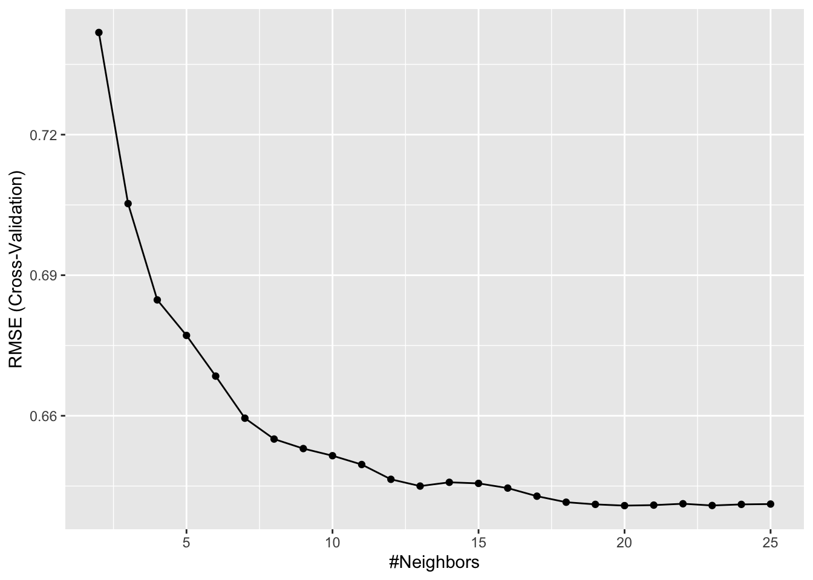

library(gssr)
gss24 <- gss_get_yr(2024)
target <- "happy"
features <- c(
"age", # age of participant
"sex", # sex of participant
"race", # race of participant
"educ", # highest education completed by participant
"income", # income of participant
"childs", # number of children participant has
"wrkstat", # work force status
"marital", # marital status
"born", # whether or not participant was born in USA
"partyid", # political party of participant
"adults", # num of fam members 18 or older
"earnrs" # number of earners in family
)
data <- gss24[,c(target, features)]
# define which varibles are categorical and continuous
cat_vars <- c("sex","race", "educ", "wrkstat", "marital", "born", "partyid")
con_vars <- c("age","income","childs","adults","earnrs","happy")
capwords <- function(x, strict = FALSE) {
cap <- function(x) paste(toupper(substring(x, 1, 1)),
{x <- substring(x, 2); if(strict) tolower(x) else x},
sep = "", collapse = " " )
sapply(strsplit(x, split = " "), cap, USE.NAMES = !is.null(names(x)))
}
data <- data |>
mutate(
# Convert all missing to NA
across(everything(), haven::zap_missing),
# Make all categorical variables factors and relabel nicely
across(all_of(cat_vars), forcats::as_factor),
across(all_of(con_vars), as.numeric),
across(all_of(cat_vars), \(x) forcats::fct_relabel(x, capwords, strict = TRUE))
)
data <- data[!is.na(data$happy),]Workflow
Workflow in R
To illustrate how this process works together in R code, let’s do a simple analysis using our example data, starting from scratch.
The steps below simply re-downloads our data, selects the variables we want to keep, cleans up the missing data codes and does some basic relabeling.
We can now separate our data into a training and test set.
# install.packages("rsample")
library(rsample)
# Stratified sampling with the rsample package
set.seed(123)
split <- initial_split(data, prop = 0.7, strata = "happy")
data_train <- training(split)
data_test <- testing(split)Now, we will formally introduce the recipes package.
The recipes package is part of the tidymodels framework and is designed for feature engineering. In machine learning, raw data usually isn’t ready to be used directly in a model—you might need to do all the things we discussed in these notes.
Instead of doing all these steps manually, recipes lets us define a sequence of preprocessing steps (called a recipe) that can be applied consistently to training and test data.
A recipe typically goes through three main stages:
1. Define the recipe
- Write down the blueprint of preprocessing steps you want to apply.
- Example: “Impute missing values, standardize numeric predictors, and one-hot encode categorical variables.”
- At this stage, the recipe only records what to do, not how to do it.
2. Prep
- Use the training data to learn any parameters needed for preprocessing.
- Example: Calculate means and standard deviations for standardization, determine category levels for encoding, or find values to impute.
- After prepping, the recipe is ready to be applied consistently to new data.
3. Bake
- Apply the recipe to a dataset (training, validation, or test).
- This step actually transforms the data using the information learned during the
prepstage.
- The output is a processed dataset that can be used directly in a machine learning model.
For example, the following defines happy as the target variable and then uses all the remaining columns as features based on data_train. We then:
Remove near-zero variance features that are categorical (aka nominal).
Impute missing data
Dummy encode our categorical features.
Center and scale (i.e., standardize) all numeric features
blueprint <- recipe(happy ~ ., data = data_train) %>%
step_nzv(all_nominal()) %>%
step_impute_bag(all_predictors()) %>%
step_dummy(all_factor_predictors(), one_hot = FALSE) %>%
step_center(all_numeric(), -all_outcomes()) %>%
step_scale(all_numeric(), -all_outcomes())
blueprint
# these are example steps you don't need to run for any reason other
# than troubleshooting
# prepare <- prep(blueprint, training = data_train)
# prepare
# baked_train <- bake(prepare, new_data = data_train)
# baked_test <- bake(prepare, new_data = data_test)
# baked_trainNext, we can fit a model using the caret pacakge, using our blueprint as the first argument and then caret takes care of the rest.
library(caret)
# Specify cross-validation plan
cv <- trainControl(
method = "cv", # k-folds cross-validation",
number = 10 # 10 folds
)
# Create grid of hyperparameter values
hyper_grid <- expand.grid(k = seq(2, 25, by = 1))
# Tune a knn model using grid search
knn_fit <- train(
blueprint,
data = data_train,
method = "knn",
trControl = cv,
tuneGrid = hyper_grid,
metric = "RMSE"
)
knn_fitk-Nearest Neighbors
2295 samples
12 predictor
Recipe steps: nzv, impute_bag, dummy, center, scale
Resampling: Cross-Validated (10 fold)
Summary of sample sizes: 2066, 2066, 2066, 2064, 2066, 2065, ...
Resampling results across tuning parameters:
k RMSE Rsquared MAE
2 0.7418063 0.03097989 0.5719579
3 0.7052823 0.03088297 0.5546278
4 0.6847273 0.03149323 0.5390046
5 0.6771450 0.02897065 0.5329401
6 0.6684619 0.03192580 0.5233915
7 0.6594812 0.03810636 0.5159846
8 0.6550279 0.03945877 0.5112249
9 0.6529972 0.03903932 0.5081061
10 0.6514761 0.03798039 0.5039809
11 0.6495920 0.03878046 0.5006377
12 0.6464377 0.04135895 0.4983083
13 0.6449913 0.04153260 0.4959262
14 0.6457968 0.03833580 0.4952235
15 0.6455656 0.03708429 0.4940333
16 0.6445642 0.03761307 0.4920747
17 0.6428354 0.03999850 0.4895426
18 0.6415509 0.04156203 0.4877497
19 0.6410869 0.04199466 0.4861644
20 0.6408229 0.04204207 0.4847307
21 0.6409284 0.04098073 0.4844582
22 0.6412205 0.04035344 0.4837011
23 0.6408491 0.04051976 0.4822852
24 0.6410824 0.03919338 0.4819184
25 0.6411540 0.03858298 0.4816823
RMSE was used to select the optimal model using the smallest value.
The final value used for the model was k = 20.ggplot(knn_fit)